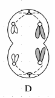

生物步步高12.减数分裂和受精作用
生物步步高12.减数分裂和受精作用
tags: Biology
-
减数分裂的概念
-
范围：进行有性生殖的生物。
-
时期：从原始生殖细胞到成熟生殖细胞。
-
特点：染色体只复制一次，细胞连续分裂两次
-
成熟生殖细胞中染色体数目是原始生殖细胞中的一半。
-
| 比较项目 | 精子的形成 | 卵细胞的形成 |
|---|---|---|
| 场所 | 睾丸 | 卵巢 |
| 时间 | 初情期 | 胎儿时期和初情期后 |
| 细胞质分裂 | 均等分裂 | 卵母细胞不均等，第一极体均等 |
| 是否变形 | 变形 | [1]不变形 |
| 结果 | 1 个精原细胞 →4 个精细胞 → 变形成为 4 个精子(成熟配子) | 1 个卵原细胞 →1 个较大的卵细胞(成熟配子)和 3 个较小的极体(退化消失，不能受精) |
| 相同点 | 染色体的变化行为相同 |
一个卵原细胞不均等分裂最终只形成一个体积较大的卵细胞，这有什么意义？
使卵细胞的体积尽可能的大，储存足够的营养物质，保证受精后受精卵早期发育的物质和能量供应。
-
受精作用
-
概念：卵细胞和精子相互识别、融合成为受精卵的过程。
-
实质：精子的细胞核与卵细胞的细胞核相融合，使彼此的染色体会合在一起。
-
结果：受精卵中的染色体数目又恢复到体细胞中的数目。
-
意义：减数分裂和受精作用对于维持每种生物前后代体细胞中染色体数目的恒定，对于生物的遗传和变异，都是十分重要的。
-
! !这是什么细胞？ 初级精母细胞。
! !这是什么细胞？ 初级卵母细胞。
! !这是什么细胞？ 次级卵母细胞。
! !这是什么细胞？ 次级精母细胞或极体。
受精卵中遗传物质一多半来自母方的原因是？
细胞核中遗传物质一半来自父方、一半来自母方，细胞质中的遗传物质几乎全部来自母方。
判断：有丝分裂和减数分裂都有细胞周期。
错误。
判断：减数第二次分裂后期彼此分离的染色体大小、形态一样，但不是同源染色体。
正确。
判断：精子和卵细胞的相互识别是通过细胞的直接接触完成的。 正确。
减数第一次分裂染色体数目减半的原因是？ 同源染色体分离，并分别进入两个子细胞。
请从配子形成和受精作用两个方面解释遗传多样性的原因。 减一分裂时四分体中非姐妹染色单体间的交叉互换， 减一后期非同源染色体的自由组合，都导致配子中染色体组合的多样性。 卵细胞和精子的随机结合，进一步增加了受精卵中染色体组合的多样性，因而增加了遗传的多样性。
请从配子形成和受精作用两个方面解释遗传稳定性的原因(以二倍体为例)。 减数分裂形成的配子中染色体数目减半； 而且每个配子中的染色体是一整套非同源染色体的组合。 卵细胞和精子的结合，使受精卵中的染色体数目又恢复到体细胞中的数目， 生物体的性状是由染色体上的遗传物质控制的， 因此，染色体数目的恒定维持了遗传的稳定性。
判断：形态、大小相同的染色体不一定是同源染色体，同源染色体形状、大小也不一定相同。 正确。 前者考虑着丝点分裂的两条子染色体。 后者考虑性染色体。
两精细胞染色体完全相同，可能的来源？ 同一次级精母细胞。
两精细胞染色体“互补“，可能的来源？ 同一初级精母细胞分裂产生的两个次级精母细胞。
两精细胞染色体有的相同，有的互补，可能的来源？ 同一个体的不同精原细胞。
判断：次级精母细胞中不会同时含有来自父方和母方的染色体。 错误。同源染色体分离时，两边都可能分到父方、母方的染色体。
-
观察细胞的减数分裂实验原理
-
蝗虫的精母细胞进行减数分裂形成精细胞，再形成精子。此过程要经过两次连续的细胞分裂。在此过程中，细胞中的染色体形态、位置和数目都在不断地发生变化，因而可据此识别减数分裂的各个时期。
-
-
观察细胞的减数分裂实验材料选择
-
宜选用雄性个体生殖器官如植物的花药、动物的精巢作为观察减数分裂实验的材料，原因如下：
-
雄性个体产生精子的数量多于雌性个体产生卵细胞的数量。
-
在动物卵巢内的减数分裂没有进行彻底，有的排卵时排出的仅仅是次级卵母细胞，只有和精子相遇后，在精子的刺激下，才能继续完成减数第二次分裂。
-
-
判断：可以连续观察一个细胞减数分裂的全过程。 错误。
判断：某二倍体动物细胞内有 10 条染色体，10 个 DNA 分子，且细胞膜开始缢缩，可能处于有丝分裂后期。 错误，只可能是 M II 后期，n=10 如果是有丝分裂后期，则应当有 4n 条染色体，10 不满足。
减数分裂：进行有性生殖的生物，在产生成熟生殖细胞时进行的染色体数目减半的细胞分裂。在减数分裂过程中，染色体复制一次，而细胞分裂[1]两次。减数分裂的结果是，成熟生殖细胞中的染色体数目比原始生殖细胞的减少一半。
同源染色体指的是什么？ 在减数分裂中配对的两条染色体，形状和大小一般都相同，一条来自父方，一条来自母方。
联会指的是什么？ 同源染色体两两配对的现象。
四分体指的是什么？ 联会后的每对同源染色体含有四条染色单体，叫做四分体。
交叉互换指的是什么？ 四分体中的非姐妹染色单体之间经常发生缠绕，并交换一部分片段。
受精作用指的是什么？ 卵细胞和精子相互识别、融合成为受精卵的过程。
减数分裂过程中染色体数目的减半发生在减数第一次分裂。
判断：精原细胞既能进行有丝分裂，又能进行减数分裂。 正确。
判断：一个染色体组可以同时含有来自父方和母方的染色体。 正确。例如次级精母细胞含有一个染色体组。
判断：一个染色体组一定不含同源染色体。 正确。
在观察人体发生减数分裂的细胞时，发现 X、Y 染色体总是最先分离，分析其原因可能是？ X、Y 染色体同源区段太少。
有丝分裂和减数分裂的子细胞核 DNA 数不同的根本原因是？ 有丝分裂核 DNA 复制一次而细胞分裂一次。 减数分裂核 DNA 复制一次而细胞连续分裂两次。
手动添加


| 比较项目 | 减数分裂 | 有丝分裂 |
|---|---|---|
| 分裂的细胞 | 原始生殖细胞 | 体细胞或原始生殖细胞 |
| 细胞分裂次数 | 2 次 | 1 次 |
| 染色体复制时期 | 减数第一次分裂前的间期 | 间期 |
| 联会、四分体 | 发生在减数第一次分裂前期 | 不出现 |
| 交叉互换(基因重组) | 发生在同源染色体的非姐妹染色单体之间 | 不发生 |
| 同源染色体分离 | 发生在减数第一次分裂后期 | 不发生 |
| 着丝点分裂 | 发生在减数第二次分裂后期 | 发生在后期 |
| 子细胞间的遗传物质 | 不一定相同 | 一般相同 |
| 可遗传变异 | 基因突变、基因重组、染色体变异 | 基因突变、染色体变异 |